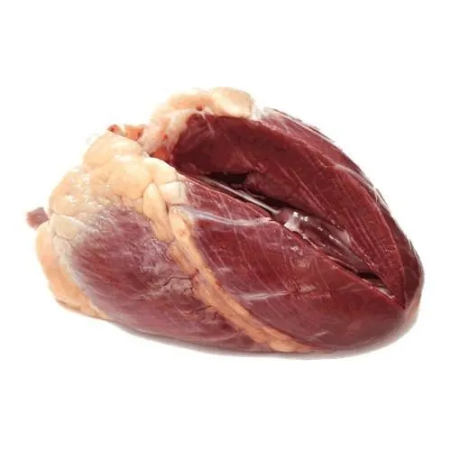

Trabalho de Biologia sobre a anatomia do coração bovino, destacando sua estrutura externa, estrutura interna, principais vasos, cavidades e funções no sistema circulatório.
O coração do boi é um órgão muscular responsável por impulsionar o sangue pelo corpo. Como ocorre em outros mamíferos, ele possui quatro cavidades, vasos sanguíneos importantes e estruturas internas que controlam o fluxo sanguíneo.
O estudo do coração bovino ajuda a compreender a circulação fechada, dupla e completa dos mamíferos. Esse tipo de circulação permite que o sangue venoso e o sangue arterial não se misturem, garantindo maior eficiência no transporte de oxigênio e nutrientes.
A imagem mostra o coração bovino com explicações sobre estruturas externas e internas. No computador, as informações ficam posicionadas ao redor da figura. No celular, elas aparecem abaixo da imagem para facilitar a leitura.

A estrutura externa corresponde às partes visíveis do coração, como superfície cardíaca, vasos, sulcos, base e ápice.
A base é a região superior, onde entram e saem grandes vasos. O ápice é a extremidade inferior, formada principalmente pelo ventrículo esquerdo.
Incluem a aorta, o tronco braquiocefálico, artérias carótidas, artéria subclávia e vasos relacionados à circulação pulmonar.
São marcas externas que indicam a separação entre cavidades e servem de trajeto para vasos coronários.
As artérias coronárias irrigam o músculo cardíaco, enquanto as veias cardíacas drenam o sangue usado pelo próprio coração.
A estrutura interna é formada por cavidades, septos, valvas e tecidos que controlam a passagem do sangue.
São as cavidades superiores do coração. O átrio direito recebe sangue venoso do corpo, e o átrio esquerdo recebe sangue oxigenado dos pulmões.
São as cavidades inferiores. O ventrículo direito envia sangue aos pulmões, e o ventrículo esquerdo envia sangue para todo o corpo.
Parede interna que separa os lados direito e esquerdo do coração, impedindo a mistura entre sangue venoso e arterial.
Controlam a direção do fluxo sanguíneo e impedem que o sangue retorne para a cavidade anterior.
É a camada muscular responsável pela contração do coração e pelo bombeamento do sangue.
O endocárdio reveste internamente as cavidades. O pericárdio envolve e protege o coração externamente.
Resumo das principais estruturas externas e internas do coração bovino.
| Estrutura | Tipo | Função |
|---|---|---|
| Átrio direito | Interna | Recebe sangue venoso vindo do corpo. |
| Átrio esquerdo | Interna | Recebe sangue oxigenado vindo dos pulmões. |
| Ventrículo direito | Interna | Bombeia sangue para os pulmões. |
| Ventrículo esquerdo | Interna | Bombeia sangue para todo o organismo. |
| Arco aórtico | Externa | Conduz sangue oxigenado para a circulação sistêmica. |
| Artérias coronárias | Externa | Irrigam o músculo cardíaco. |
| Veias cardíacas | Externa | Drenam o sangue do miocárdio. |
| Septo cardíaco | Interna | Separa o lado direito e esquerdo do coração. |
| Valvas cardíacas | Interna | Impedem o refluxo sanguíneo. |
O coração do boi é um órgão essencial para a circulação sanguínea. Suas estruturas externas, como vasos e sulcos, e suas estruturas internas, como átrios, ventrículos, septos e valvas, trabalham em conjunto para manter o sangue em movimento.
Ao analisar a imagem anatômica e as informações destacadas, é possível compreender melhor a organização do coração bovino e relacioná-la ao funcionamento do sistema circulatório dos mamíferos.
Espaço destinado à identificação dos alunos responsáveis pela elaboração do trabalho.
Miguel Xavier
Miguel
Lucas
Guilherme
Mikael